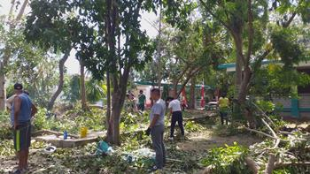

Historia
Comienzos
Todo comenzó en 1980, con la motivación y fortaleza de un grupo de personas que deseaban un Quintana Roo más educado y sabio. El plantel inició con 98 alumnos distribuidos en dos grupos. Las capacitaciones que se impartieron fueron tres: Administración de recursos humanos, administración de empresas turísticas y dibujo arquitectónico, el personal constaba por 8 administrativos y 13 docentes.
Visualicemos el Colegio de Bachilleres como está ahora, cuenta con 7 edificios los cuales en su comienzo sólo eran dos edificios, la parte administrativa y el segundo edificio eran las únicas aulas existentes, todo lo demás era selva y terracería. Los maestros y padres de familia de los alumnos se tomaron a la tarea de empezar a construir lo que es hoy en día es bachilleres. Nuestro querido colegio empezó muy desde abajo y aunque es triste, el gobierno no propició la renovación de este, todo fue obra de los docentes, padres de familia y alumnos, aunque es difícil creer que los alumnos participaran en dicho proyecto hay pruebas que marcan ese punto importante en nuestra historia. Así que para las personas que piensan que este hermoso colegio fue obra del gobierno está muy equivocado, desde empezar a talar árboles, mover piedras, remover suelo, todas esas acciones fueron realizadas por las personas interesadas en las futuras generaciones que estudiarían en dicho plantel.
Entrevista
Nosotros como estudiantes pasamos normalmente 3 años en el plantel, aprendiendo, socializando y creciendo. Pero ¿A quien le podemos preguntar sobre el plantel a lo largo del tiempo?, !Asi es¡ A los profesores. A continuacion les mostraremos la entrevista
Huracanes
Los huracanes son fenómenos meteorológicos extremos que se forman en regiones cálidas del océano y se caracterizan por vientos fuertes, lluvias torrenciales y marejadas ciclónicas. Estos sistemas meteorológicos pueden causar una amplia gama de daños, incluyendo inundaciones, deslizamientos de tierra, destrucción de infraestructuras y pérdidas de vidas humanas.
Acontunuaion repasaremos los HURACANES que han afectado a la zoa en los ultimos 20 años
Wilma
El huracán Wilma fue el vigésimo primer huracán de la Temporada de huracanes en el Atlántico de 2005. Wilma fue el cuarto huracán de categoría 5 de la temporada que batió el récord de las temporadas pasadas de 1960 y 1961. Es el huracán más intenso registrado en el Atlántico y el décimo ciclón tropical más intenso registrado en todo el mundo.
Sabemos que el huracán Wilma fue uno de los más graves e importantes en la historia de Quintana Roo, tras su paso dejo mucha destrucción en toda la península de Yucatán; muchas personas aún recuerdan todo lo que se vivió en aquel entonces, y en esta ocasión nos enfocaremos en cómo recibió el huracán nuestro plantel, en qué condiciones se encontraba la escuela después de su paso y finalmente cómo se pudo recuperar nuestro colegio de ese desastre, recurrimos a muchos profesores que actualmente están en el plantel y que en ese entonces les tocó vivir dicho huracán.
Delta
El día 7 de octubre a las 06:00 horas, tiempo del centro de México, cuando se encontraba frente a la costa de Quintana Roo, “Delta” se degradó a huracán de categoría 2 con vientos máximos sostenidos de 175 km/h y rachas de 205 km/h, fuerza con la que después de recorrer dos kilómetros que lo separaban de la costa, tocó tierra a 6 km al sur-suroeste de Puerto Morelos, Q. Roo. Mientras se desplazaba hacia el noroeste sobre territorio de Quintana Roo y Yucatán, “Delta” estuvo disminuyendo su fuerza como huracán de categoría 2, debido a la falta de la energía que obtenía del mar y a la fricción con el terreno. A las 7:00 horas, se ubicó a 9 km al este de Kantunilkín, Q. Roo con vientos máximos sostenidos de 165 km/h y rachas de 205 km/h, misma fuerza con la que aproximadamente a las 11:00 horas, salió al mar a 30 km al oeste de Río Lagartos, Yuc.
En el Golfo de México, “Delta” enfrentó nuevas vicisitudes debido a las condiciones de aguas con menor contenido de calor oceánico y mayor cizalladura en el occidente y suroeste del Golfo de México que bloquearon su trayectoria hacia esa región y la desviaron hacia la costa de Louisiana, E. U. A. Fue así que, después de mantenerse como huracán de categoría 2 sobre la península de Yucatán, en su recorrido por el Golfo de México, el día 7 de octubre por la tarde se degradó a huracán de categoría 1 con vientos máximos sostenidos de Ciclones Tropicales 2020 Gerencia de Meteorología y Climatología Subgerencia de Pronóstico Meteorológico Huracán “Delta” del Océano Atlántico 140 km/h y rachas de 165 km/h a 90 km al nor-noreste de Progreso, Yuc.
Zeta
A las 13:10 horas del 26 de octubre (tiempo del centro de México), la Tormenta Tropical “Zeta” se intensificó a huracán de categoría 1 en la escala SaffirSimpson a una distancia de 170 km al sureste de Cozumel, Q. Roo, con vientos máximos sostenidos de 130 km/h, rachas de 155 km/h y desplazamiento hacia el noroeste a 17 km/h con dirección a la costa de Quintana Roo.
El Huracán “Zeta” continuó desplazándose hacia el noroeste, y a las 22:00 horas del 26 de octubre, el centro del ciclón tropical ingresó a tierra en las inmediaciones de Ciudad Chemuyil y a 15 km al nor-noreste de Tulum, ambas localidades del municipio de Tulum, Q. Roo, como huracán de categoría 1, con vientos máximos sostenidos de 130 km/h, rachas de 155 km/h y desplazamiento hacia el noroeste a razón de 20 km/h
Mientras el Huracán “Zeta” de categoría 1 se desplazó en tierra sobre el noreste de la Península de Yucatán, disminuyó gradualmente la velocidad de sus vientos y a las 03:00 horas del 27 de octubre, se degradó a tormenta tropical a 65 km al sureste de Dzilam y a 140 km al este-sureste de Progreso, Yuc., con un registro 110 km/h de vientos máximos sostenidos, rachas de 140 km/h y desplazamiento hacia el noroeste a 22 km/h.
Pandemia
hace 3 años se nos dijo que del 17 de marzo y hasta el 19 de abril nos tendriamos que confinar y estos nos afecto de muchas maneras. Entre ellas encontramos a las siguientes:
- Transición a la educación a distancia: Muchas escuelas preparatorias han tenido que pasar a la educación a distancia para evitar la propagación del virus. Esto ha requerido la implementación de tecnologías de enseñanza en línea y cambios en la dinámica de la enseñanza y el aprendizaje.
- Pérdida de tiempo de aprendizaje: La educación a distancia puede resultar en una pérdida de tiempo de aprendizaje debido a la falta de interacción en el aula y las dificultades técnicas.
- Interrupciones en los exámenes y los planes de estudios: La pandemia ha llevado a la cancelación o aplazamiento de exámenes y pruebas importantes, lo que ha generado preocupación entre los estudiantes y ha causado cambios en los planes de estudios.
- Dificultades para mantener la motivación: La educación a distancia puede resultar en una pérdida de motivación y un mayor desafío para mantener a los estudiantes comprometidos con el aprendizaje.
- Problemas de salud mental: La pandemia y la transición a la educación a distancia han llevado a un aumento en la ansiedad, el estrés y la depresión entre los estudiantes.
- Dificultades para mantener la equidad educativa: La educación a distancia puede aumentar las desigualdades en la educación, ya que algunos estudiantes pueden no tener acceso a la tecnología o un entorno adecuado para el aprendizaje en línea.